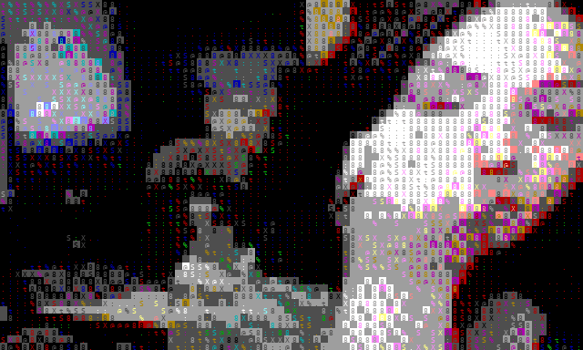
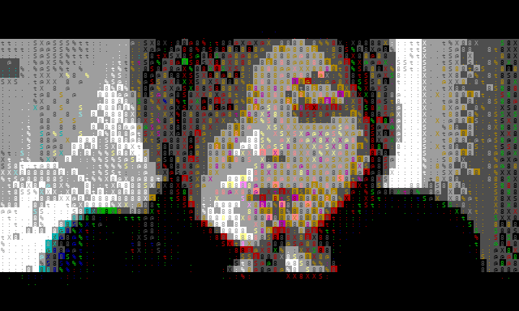

A small neural video model that operates natively on colored ASCII / libcaca-style video, rather than on pixels.
Code: Decentricity/neurascii
GIFs are rendered offline from symbolic .avm.npz rollouts (glyph + xterm colors), not terminal screenshots.

Single-class next-frame training (kept separate from lipstick).

Trained separately from eye-makeup.
Both makeup classes in one run.
libcaca can act as a fixed perceptual encoder. Training on glyph + color lattices may learn short-term video dynamics with less capacity than pixel-space models. We do not yet claim efficiency vs equal-bandwidth pixel baselines.
| Knob | Value |
|---|---|
| Frame | 80×48 chars, 10 FPS |
| Cell | glyph + fg + bg (separate heads) |
| Palette | xterm-256 |
| Patches | 4×4 (240 / frame) |
| Model | ~32M Transformer, next-frame |
| Context | 8 frames |